Next: Bases, Linear Independence, Matrix Up: Vector Spaces Previous: Subspaces Contents Index
It would be very convenient to have a method of describing a vector space in such a way that we can find vectors that belong to it. Since a vector space is a very general thing, it is not possible to give a good method that encompasses every vector space. However, there is a method based on the linear combination of vectors that is a very good method of giving a description of all the vectors in certain types of vector spaces. It is called the span of a vector space. The word span will be used as both a verb and a noun. Each usage will have a distinct, although related, interpretation. We will start with a definition of the verb span.
We say that a list of vectors spans a vector space. This is slightly different from the span of a list of vectors. In this case we use span as a noun.
for any 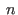 scalars 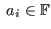 .
Theorem 5.2 from page ![[*]](crossref.gif) can easily be used to demonstrate that if
is a
collection of vectors from a subspace
, then
is a subspace of
.
can easily be used to demonstrate that if
is a
collection of vectors from a subspace
, then
is a subspace of
.
We have already worked with the span of a set (a collection) of vectors. The following example illustrates this.
Suppose we have four vectors  ,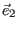
,
,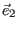
, and 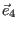
from
such that
and 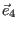
from
such that
We can say that these vectors span since any vector in is of the form
The vectors
It is possible to find out if a particular vector is in a given span. Suppose we
had three vectors in
 ,
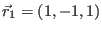
,
,
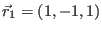
,
 and
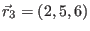
.
Call this collection of vectors
. We would like to know if
and
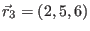
.
Call this collection of vectors
. We would like to know if
 is in
.
is in
.
To answer this, we need to know if  is a linear combination of the vectors that make up
.
Do scalars 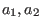
and
is a linear combination of the vectors that make up
.
Do scalars 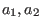
and
 exist such that
exist such that
 ? We can write this as a vector equation.
? We can write this as a vector equation.
This last vector is equivalent to the system
| 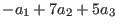 | 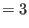 | |
| 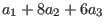 |
This is enough reduction to show that this system is solvable so
Sometimes we need to compare two subspaces. We would like to know when they are equal. The following definition gives one way of defining the equality of subspaces.
A consequence of this definition means that, if
 , then
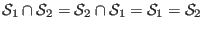
. Both
, then
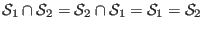
. Both
 and
contain exactly the same vectors and no others.
and
contain exactly the same vectors and no others.
Suppose we want to know if the vectors  ,
,  and 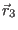
from the preceding
example span
and 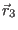
from the preceding
example span
 . Can the calculations we did be carried out for any
. Can the calculations we did be carried out for any  in
in
 ?
In general, a vector
?
In general, a vector  in
in
 can be written
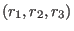
, where each
can be written
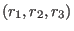
, where each
 .
This leads to the system
.
This leads to the system
| 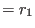 | ||
| 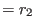 | ||
| 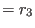 |
Since
 is Euclidean 3-space, we can have a geometrical interpretation of the span of two
vectors in
is Euclidean 3-space, we can have a geometrical interpretation of the span of two
vectors in
 . Let
be the two vectors
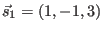
and
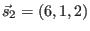
.
Then
is all vectors
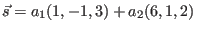
with
. Let
be the two vectors
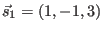
and
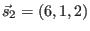
.
Then
is all vectors
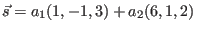
with
 . In terms of
a coordinate system for
. In terms of
a coordinate system for
 , we have
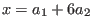
,
, we have
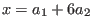
,
 and
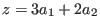
. We think
of
and
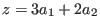
. We think
of  as being fixed so we have three equations in the two unknowns
. We solve
this using an augmented matrix where the columns refer to coefficients for
as being fixed so we have three equations in the two unknowns
. We solve
this using an augmented matrix where the columns refer to coefficients for
 and
and  , respectively.
, respectively.
This system is only consistent when
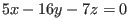
, which is an equation of a plane in
 .
If
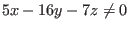
, then the system is inconsistent, because 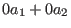
must equal 0
for any
values of
.
If
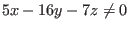
, then the system is inconsistent, because 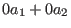
must equal 0
for any
values of  and 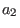
. There could be no solutions for this system. It is possible to check
this answer by substituting the values for 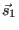
and 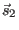
into the equation for the plane.
and 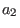
. There could be no solutions for this system. It is possible to check
this answer by substituting the values for 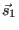
and 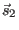
into the equation for the plane.
Besides the null space, there are two other important subspaces concerning matrices which we will define.
The column space of a matrix  is related to the idea of column equivalence
of two matrices. A matrix
is related to the idea of column equivalence
of two matrices. A matrix  is column equivalent to a matrix
is column equivalent to a matrix  if one can make
if one can make  from
from  using
a finite number of column operations. A column operation on a matrix
using
a finite number of column operations. A column operation on a matrix  can be represented by multiplying
one of the three elementary matrices on the right. In order to refresh our memory of row equivalence
and other theorems from long past pages,
we will look a bit at column equivalence.
can be represented by multiplying
one of the three elementary matrices on the right. In order to refresh our memory of row equivalence
and other theorems from long past pages,
we will look a bit at column equivalence.
All the theorems involving row operations can be used for column operations by noting that column operations
on a matrix  are the same as row operations on 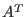
. To see this we need to recall two theorems
which were assigned as problems. We need that if
are the same as row operations on 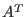
. To see this we need to recall two theorems
which were assigned as problems. We need that if  is an elementary matrix, then 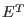
is an elementary
matrix. We also need that the transpose of the product of two matrices is the product of the transpose of the second
matrix by the first, that
is an elementary matrix, then 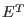
is an elementary
matrix. We also need that the transpose of the product of two matrices is the product of the transpose of the second
matrix by the first, that
 . This shows that the transpose of one type of elementary matrix
(interchanging two rows, for instance) is the same type of elementary matrix for columns (interchanging
two columns). (Can you see why?)
. This shows that the transpose of one type of elementary matrix
(interchanging two rows, for instance) is the same type of elementary matrix for columns (interchanging
two columns). (Can you see why?)
We say that a matrix  is equivalent to a matrix
is equivalent to a matrix  if one can
use a finite number of row and/or column operations to create
if one can
use a finite number of row and/or column operations to create  from
from  . Since any nonsingular matrix can be
made up of the product of elementary matrices, saying that
. Since any nonsingular matrix can be
made up of the product of elementary matrices, saying that  is equivalent to
is equivalent to  means that there
must be two nonsingular matrices
means that there
must be two nonsingular matrices  and
and  such that
such that  . The matrix
. The matrix  would be a product of elementary
row operation matrices and
would be a product of elementary
row operation matrices and  would be the product of elementary column operations.
would be the product of elementary column operations.
One way to look at this is to use partitioned matrices. Suppose  is an
matrix,
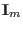
is
an
is an
matrix,
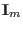
is
an  identity matrix and
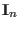
is an
identity matrix and
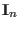
is an  identity matrix. If
identity matrix. If  is equivalent to
is equivalent to  .
we can write two
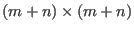
matrices to illustrate this:
.
we can write two
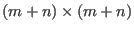
matrices to illustrate this:

In other words,
Please note that if  is row equivalent to
is row equivalent to  , then
, then  is equivalent to
is equivalent to  .
Similarly, if
.
Similarly, if  is column equivalent to
is column equivalent to  , then
, then  is equivalent to
is equivalent to  .
If
.
If  is equivalent to
is equivalent to  , we cannot say only from this that
, we cannot say only from this that  is row equivalent to
is row equivalent to  . Neither
can we conclude that
. Neither
can we conclude that  is column equivalent to
is column equivalent to  .
.
We now return to discussions of the column space of a matrix  ,
, by first noting that
the columns of an
matrix
,
, by first noting that
the columns of an
matrix  over a field
can be considered as
over a field
can be considered as  vectors
vectors
 in
. A typical vector
in
. A typical vector  in
would then have the form
in
would then have the form
where . Using the algebra of matrices, we can rewrite this as
This leads us to conclude that
When doing work with vectors, we could rephrase this, using , as
Similarly it can be shown that the row space of a matrix  over
is
over
is
When we want to prove something about all matrices of a certain type, we start by giving a representative of all these matrices and use this representative to acquire the proof. Since the representative could be any matrix of this type, then the proof must hold for all matrices of this type. This method of proof can be used in many situations and, of course, for more than just matrices.
We can now write two simple, but useful, theorems.
If
exists, then
in
implies that
which
lets us write that
. This shows that
is in
, so that
is a subspace of
. Therefore,
.

If
and
exists, then from the last result we know that
and therefore that
is a subspace of
.
From the definition of equality of subspaces, we have
.

The span of
in
 is just the point at the origin.
The span of a single vector
is just the point at the origin.
The span of a single vector
 (
( not equal to the zero vector)
in
not equal to the zero vector)
in
 is all scalar multiples of this vector,
.
It is simply the line through the origin
containing the vector
is all scalar multiples of this vector,
.
It is simply the line through the origin
containing the vector  . The span of two such vectors,
. The span of two such vectors,  and
,
is any vector in
and
,
is any vector in
 that is a linear combination of
that is a linear combination of  and
.
Such a linear combination determines a plane
through the origin as long as
and
.
Such a linear combination determines a plane
through the origin as long as  is not a scalar multiple of
.
We will examine the situation where we have the span of three or more of these type of vectors in the next section.
is not a scalar multiple of
.
We will examine the situation where we have the span of three or more of these type of vectors in the next section.